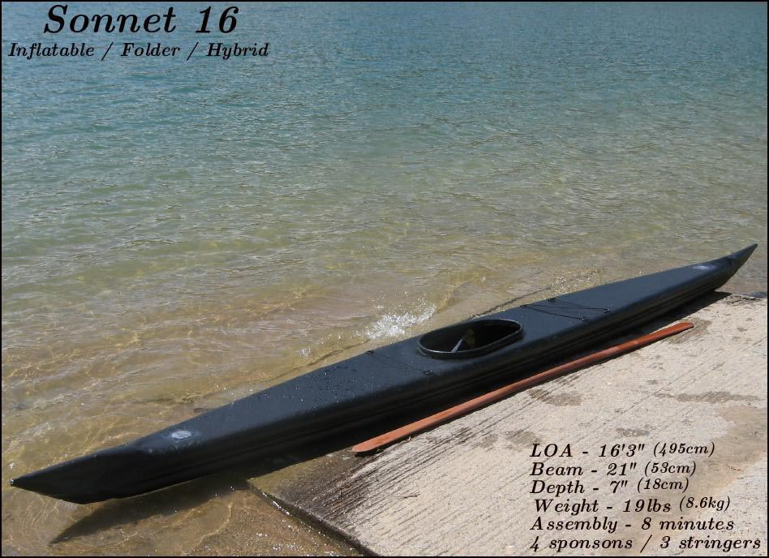

| Menu Previous Page Next Page | |
|

The Sonnet 16 is an inflatable / folder hybrid. The frame consists of 4 "Folbot" sponsons ( 15' upper and 13.5' lower), 3 aluminum stringers, and 2 cross braces. There is no deckridge or cross sections. The skin is 10oz Coverene PVC. The boats dimensions are 16.2' X 21" or 22.5" X 19lbs ( 495cm X 53cm or 57cmX 8.6kg). The Sonnet 16 is designed for paddlers up to 200 lbs. Assembly is consistently under 10 minutes, with disassembly under 5 minutes. Build time was 50 hrs. at a cost of $300.00US. The Sonnet 16 can be built with beams of either 21" or 22.5" ( 53cm or 57cm)
Sonnets have been tested with as many as 2 sponsons deflated at once, and they remain stable in the water. |
|